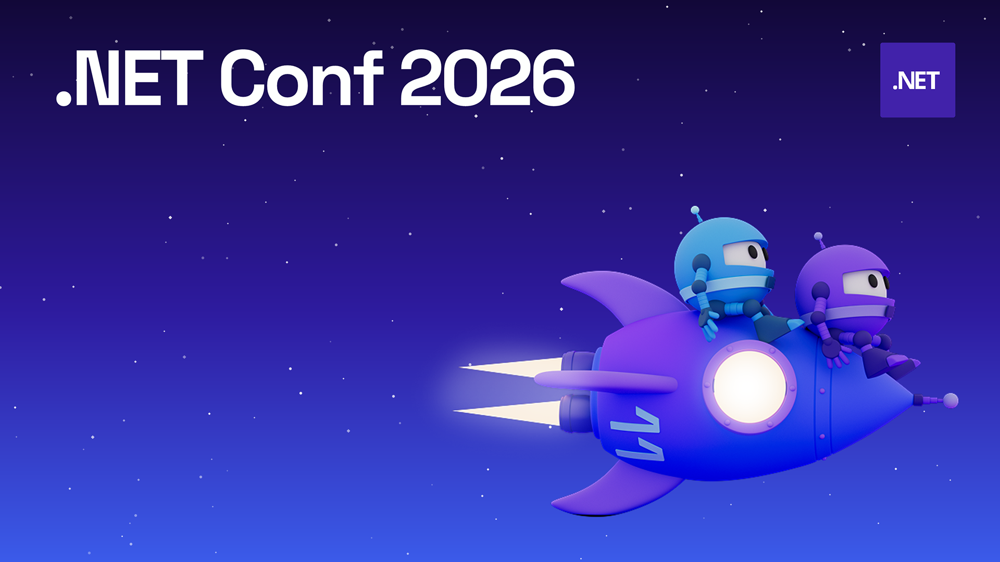

.NET Conf 2026 - Keynotes

.NET 11 Launch - Scott Hanselman, David Ortinau, Mads Torgersen, Chet Husk, Rich Lander, Dan Roth, Gerald Versluis, Luis Quintanilla, Wendy Breiding, Drew Skwiers-Koballa & Kathy Sullivan
Scott Hansleman spoke about his experiences with .NET from the early days of the beta and release in 2002 with the functionality available and how he has shared what he knows with others and that.NET 11 is a fantastic release.
David Ortinau talked about how .NET started with Windows with server and client with SOAP as well as for web with updates in 2008 for MVC, then mobile with Xamarin in 2008 and then 2016 with cloud and modern .NET to this year with AI and.NET 11 is now available.
Mads Torgersen talked about new features in C# with union types where can make sure have all possibilities for these with a switch and if you add an additional type then you will get warned that all options have not been exhausted but other features include collection arguments, labelled break and continue, extension indexes and improvements to memory safety.
Chet Husk talked about that the usage of CLI has tripled in the last year alone, where .NET really does go to eleven, so make sure options that humans and agents are available, improvements to file based apps include support for sharing code with #:include, add packages, references and can format code consistently in file-based applications. More CLI goodness include dotnet watch is more resilient, container publish supports wslc container runtimes, smaller SDK downloads allowing smaller docker images and a new interesting way to get .NET with a cross-platform dotnetup install manager. The CLI is a .NET AoT application and builds themselves can get faster for both cold and warm builds.
Rich Lander is talking about features including runtime async to make async code faster and cheaper and will be able to opt into this and will be default in .NET 12, there will be no IL async state machines and don't need ValueTask where runtime async eliminates allocations where before this would grow as call stack depth increases. Another feature is to make C# code safer which will in preview in .NET 11 and general availability in .NET 12. As a team security is a top priority where memory safety is a part of this and C# already is a memory safe language but there are changes to be made where C# adopts the Rust / Swift unsafe-contract model with similar syntax but have errors instead of warnings where unsafe code is disallowed by default.
Dan Roth spoke about what is new for .NET developers in .NET 11, which includes union types with JsonUnion where can have different response types and how to serialise the active case, where .NET 11 also supports OpenAPI 3.2.0 and can also on the render side render the response based upon the different union types. There is also support for async validation with AsyncValidationAttributes which works with DataAnnotationsValidator where can also check if one is in progress. If you try to send a request for another website and ASP.NET Core will protect and reject cross-site requests automatically without needing any forgery tokens, is more performant and can let valid requests go through.
Gerald Versluis showed off things in .NET MAUI, which has changed over the years from start in 2009 MonoTouch brought C# to iPhone as well as later Mono and Xamarin developments supporting Windows Phone 8 to Windows 11 and evolved but now in .NET 11 it uses CoreCLR on every platform. Native AoT allows for faster and smaller applications, and XAML source generation is on by default and everything on the latest platforms and use Avalonia backend for Linux support. AI for .NET MAUI developers where you can put AI in your apps with Essentials.AI or build your apps with agents that build with you including DevFlow for making apps available to agents and .NET MAUI agent skills, there is also a sample .NET Conf app at github.com/jfversluis/dotnetconf-app.
Luis Quintanilla spoke about modernisation for .NET, such as HttpMaster with modern foundation with new capabilities or Visual Studio with modern libraries along with retaining existing functionality. It is also possible to use Aspire to orchestrate and build out applications on developer and build machine. Developers are building in AI foundations to add new capabilities without needing to start over and add the new capabilities to applications. It is also possible to run AI models locally on machine which includes Llama on Windows to use models from Hugging Face locally on your PC and will be available in the Windows Store.
Wendy Breiding showed off there are also skills available to make experience smatter and better for developers using AI, there are also a Skills Evaluation Dashboard at dotnet.github.io/skills for evaluating these skills including token usage. Roslyn has been updated to work better with multiple agents at once including 50% memory usage saving when developing .NET 11 code. Drew Skwiers-Koballa showed improvements in the C# Dev Kit to allow improved coding with agents and that builds can prime other tools with a next generate build workflow to build and work faster and can support agent-oriented modes to make operations work faster.
Kathy Sullivan talked about what was shown off and what is coming including Azure and more and spoke to Maddy about the conference where have community days later following the two team days. Microsoft builds with .NET too such as Copilot, Teams and Bing and companies of every size build on .NET, and companies or organisations also contribute to .NET, there has been 25 years of crazy developments and shifts and there are people building a secure safe platform where are keeping up with trends with .NET. You can find details of the latest version of .NET, .NET 11 at dot.net.
Visual Studio Now and Next - Mads Kristensen
Mads Kristensen talked about quite a lot of things and changed, Visual Studio is evolvbing with rest of the world where code bases are growing and solutions are getting bigger and developers need to get the most of their favourite IDE which is Visual Studio. Visual Studio targets professional developers, hobbyists and amateurs can still get the most out of it but a lot comes from that target of Visual Studio. If you a professional developer have to adhere to quality gates, accessibility requirement and more where Visual Studio is uniquely targeting that audience and professional developers see code as an asset not an artefact, vibe coding developers may not even care about code but code needs to be maintained to a standard so can maintain it for years to come, it is not a biproduct of the application and this is what Visual Studio is geared towards, but now, in the past and in the future.
Visual Studio is getting better at the fundamentals, the Visual Studio team thanks to the community have received bug reports and feature requests for Visual Studio and have been solving more user reported bugs in the past year and this trend continues with about 27 user reported bugs being solved per work day and for feature requests are going up and up but the trend is clear and are implementing two feature requests per work day which is thanks to community letting them know about features and what others may find useful and are getting better at this thanks to AI and prioritising these things and community is asking for fundamental things and things that put a smile on your face.
Visual Studio has had its fair share of performance issues, the latest version has a bunch of performance optimisations to make UI more responsive to not block UI thread and do things in background and also do updates in batches to reduce lag in the UI to make the application much snappier and designers for XAML and WinForms are faster. Even closing Visual Studio and closing solutions is a lot faster as well as Copilot is loading faster and Test Explorer including identifying failed tests with 25% faster performance when using xUnit.
Visual Studio also has a new feature which is to stop build on first failed project, so when have a solution with hundreds of projects and have an error in one project before Visual Studio would build the other projects so now can enable option to stop a build on the first project that fails which results in dramatic reduction in build times so can respond and fix issues quicker than the whole build would have failed before. Visual Studio also has another option for editorconfig where can define max line length with a vertical ruler and there is also a property for rulers that allows multiple vertical lines for all files or just certain files like Markdown where want a certain column width.
Navigation and references in Visual studio have enhancements for where people are spending more time reviewing code so understanding what you are looking at is crucial so is important to access files so can switch between folder view and solution view to see files like README.md, docker files and other files plus can see more image types in hover previews to make reviewing and understand what you're looking at easier. You can go to definition for class names in CSS and LESS files so can jump around what things mean in HTML files. If you have links in your Markdown links, you can peek or go to definition which makes an overview when doing code review is faster and navigation to tests is much easier in Test Explorer.
Visual Studio is becoming smarter with a stronger foundation, have removed the old harness for Copilot and replaced this with Copilot SDK used by Visual Studio Code and Copilot CLI for a shared foundation between different products for Copilot so they are powered by the exact same engine, such as Steering which has always been missing in Visual Studio is now there plus customisable skills, agents, MCP servers and more. You can bring your own key for OpenAI compatible models to Visual Studio. Autopilot also supports Visual Studio for bigger tasks that run for hours and spin up sub agents where it does everything and just keeps running and have separated Copilot chat sessions from solutions even if they are closed and something else has opened up to keep them running.
Visual Studio understands your running application, with the ID it has all the tools you need in the box, where are adding more support for your running application so can have Copilot do UI automation where can have Copilot verify that something is fixed or not in the UI, it can take screenshots and all the things you need to prove that something is fixed. You can investigate dump files from a client's computer and Visual Studio has always had tools to do this but now can have agent in Visual Studio help you out to analyse this. You can also get performance tips where Copilot and profiler can work together to make it faster and profile instrumentation can be done from sub agents which can figure out how to do instrumentation and figure out slow areas in code, make optimisations and run profiler again within a simple workflow.
Visual Studio understands development workflow, need to make sure Visual Studio has a solid base and has AI capabilities to help but what about workflow and where can Visual Studio help out, there may be scenarios to use chat sessions from CLI, Visual Studio Code or Copilot App and need something from Visual Studio has so would be cool to take session from there and continue this in Visual Studio so can do this by sharing the same Copilot SDK instance. You can create tests, profile them, debug then fix issues which is getting stronger in Visual Studio with features in Test Explorer which makes this easier and plug in where you need it and allows agents to use Visual Studio to speed up an inner loop. Worktrees and sub modules are fully supported in Visual Studio, so can have multiple agents work on the same code base without stepping on each other and can also do the same with sub modules. Full code review and pull request flow is supported, when agents are doing code we are reading code more than writing it so strong code review tools are important so have expanded on capabilities for a long time but there are more features that can be done in Visual Studio rather than GitHub or Azure DevOps including reusing existing context in PR flow.
Visual Studio is a tool for professionals but it doesn't have to be for every single project or scenario so Visual Studio meets you where you are whatever part of AI journey so it has tooling that is fantastic for any part of that lifecycle, if you have limited support for AI in your organisation then Visual Studio will grow with you. You can find details of Visual Studio including latest updates at visualstudio.com.